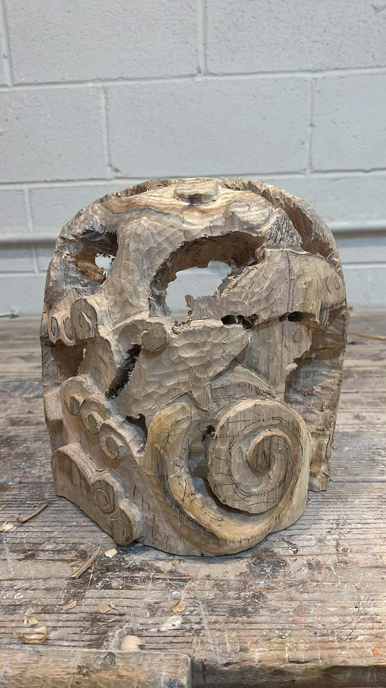
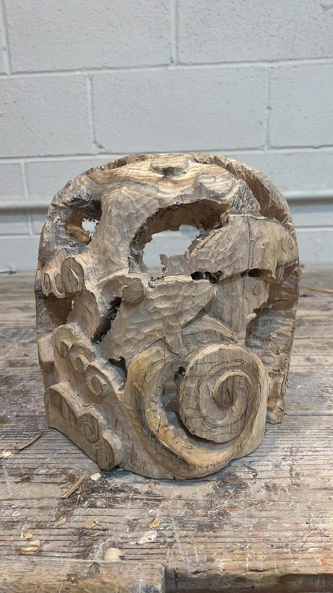

Facade
Oak, Computer Codes
2024

Facade is an interactive artwork blending wood-carved fish with an augmented reality (AR) eel to create an aquarium-like space. By scanning a QR code, viewers activate the AR component, immersing themselves in a narrative that merges traditional craftsmanship with digital innovation. The artwork explores the theme of illusion and entrapment, as the seemingly content AR eel reflects the plight of real eels in aquariums. The setup, with hanging wooden fish and a virtual eel "trapped" within the AR interface, encourages reflection on the relationship between technology, reality, and perception.
üèÜ: Red Dot Award, The Art Students League of New York‚ÄîBest in Show (2024)
üñºÔ∏è:
▫️ Juried Selection Exhibition, Gallery OneTwentyEight, New York, NY (2024)
▫️ The Art Students League of New York Annual Student Art Show, Phyllis Harrison Mason Gallery, New York, NY (2024)


 
